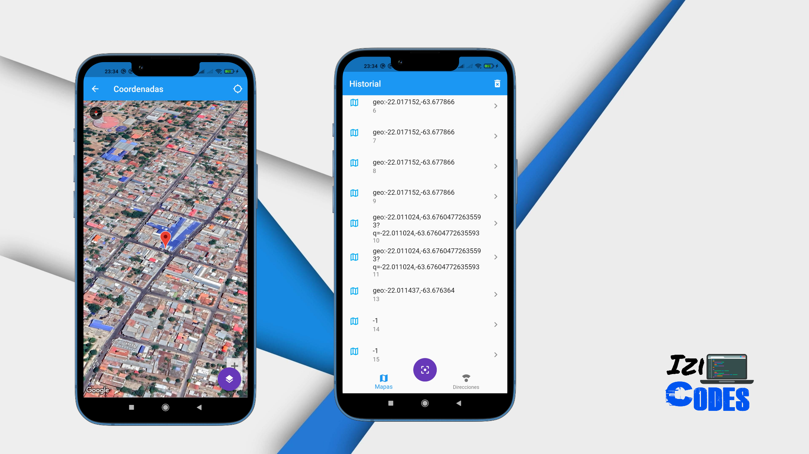

Lector de Código Qr
Qr Reader es una aplicación que brinda coordenadas o sitios web mediante la lectura de un código Qr
Este proyecto ha sido realizado por uno de los cursos adquiridos de Udemy.
Qr Reader es una aplicación que brinda coordenadas o sitios web mediante la lectura de un código Qr
Este proyecto ha sido realizado por uno de los cursos adquiridos de Udemy.